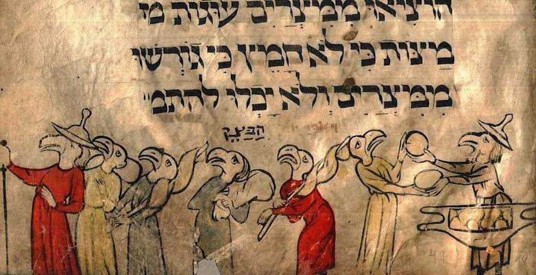
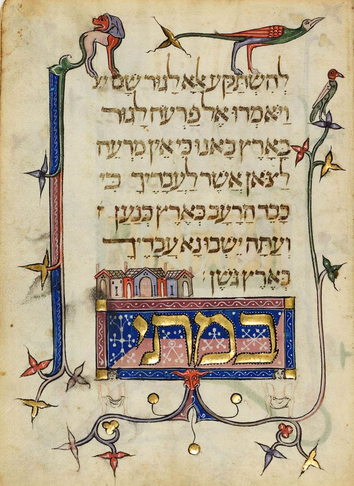
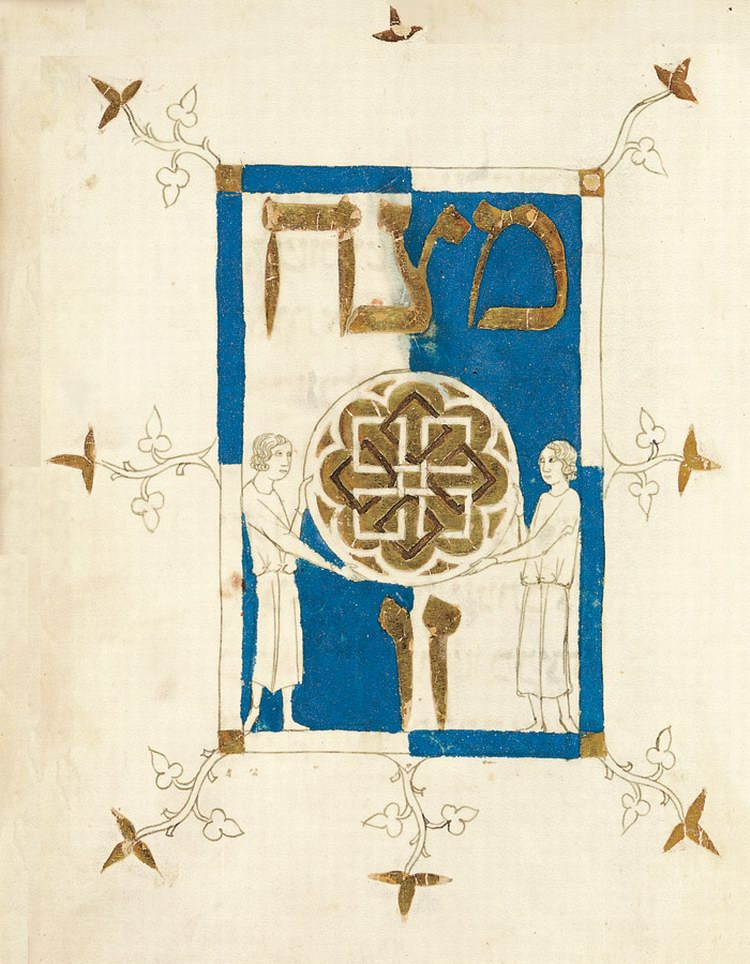
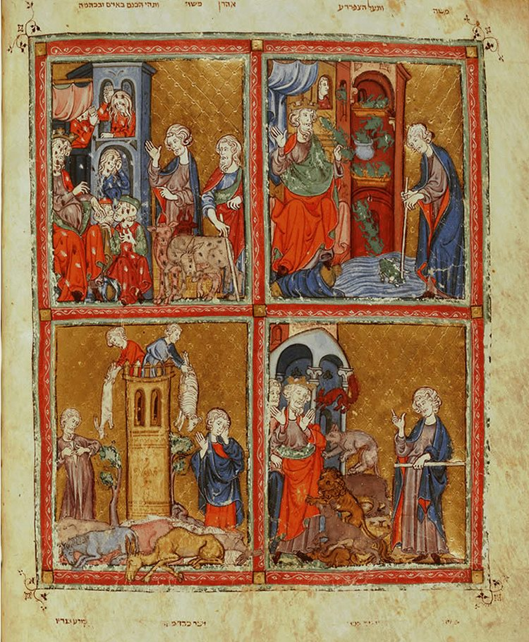
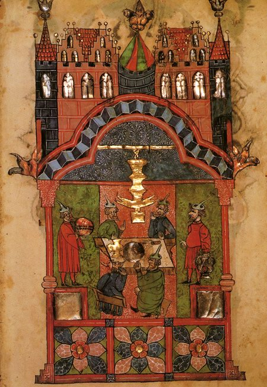
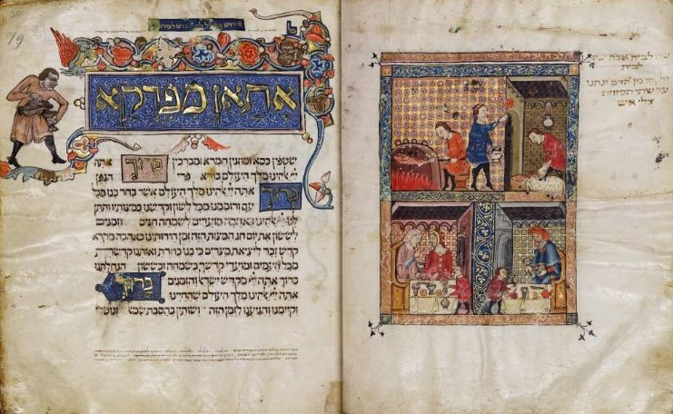
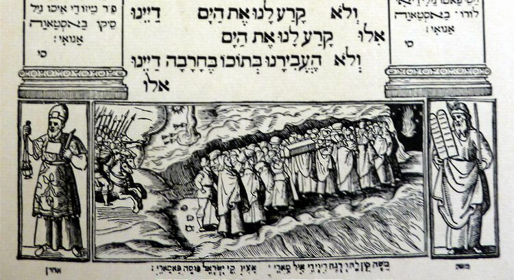

ПАСХАЛЬНАЯ АГАДА. Историческая справка
Первые известные нам «отдельные издания» «Пасхальной агады» появились в XIII веке. Ок. 1300 г. возник обычай снабжать традиционный текст иллюстрациями.

В течение многих веков Агада была весьма популярной формой духовного общения: трибуной, эстрадой, мистерией, сатирой, хвалебным гимном и колыбельным напевом. Агада давала характеристики общественной среды и отдельных её представителей, художественно реалистические картины быта, проникнутые освежающим юмором.
Особое место, значение и устройство имеет Пасхальная Агада (старинное произношение Хаггада) (ивр. הַגָּדָה שֶׁל פֶּסַח, hаггада́ шель Пе́сах) — сборник молитв, благословений, комментариев к Торе и песен, прямо или косвенно связанных с темой Исхода из Египта и ритуалом праздника Песах. Чтение Пасхальной Аггады в ночь праздника Песах — обязательная часть седера.

Традиционный текст «Пасхальной агады» окончательно сложился в раннем Средневековье. Но основные элементы пасхального повествования восходят по крайней мере к эпохе Второго храма, когда рассказ об Исходе сопровождал праздничную трапезу, где главным блюдом было мясо жертвенного ягненка.

Мишна говорит, что рассказ об Исходе должен строиться как мидраш к отрывку из Торы, который произносит еврей, приносящий в Храм начатки для жертвоприношения.
Раббан Гамлиэль (нач. I века) говорил: каждый, кто не сказал в Песах о трех этих заповедях, не исполнил свой долг (заповедь рассказывать об Исходе, установленная Торой); и вот эти заповеди: песах, маца и марор. ПЕСАХ — потому что пропускал Вездесущий дома наших отцов в Египте; МАЦА — потому что были освобождены наши отцы, когда еще находились в Египте; МАРОР — потому что горькой сделали египтяне жизнь наших отцов в Египте. В каждом, каждом поколении обязан человек смотреть на себя, словно он сам вышел из Египта...» (Мишна, Псахим, 10:5).
Привычный для нас корпус текста «Пасхальной агады» сложился в VII–VIII веках н. э.
В середине IX века Амрам Гаон, глава ешивы в Суре, включил Агаду в свой образцовый сборник молитв, названный им «Седер Амрам Гаон».
В Х веке текст Агады вошел в еще один сборник молитв, на этот раз составленный великим раввином и философом Саадьей Гаоном (882–942), также возглавлявшим ешиву в Суре.
в XIII в. появились первые известные нам «отдельные издания» «Пасхальной агады».
Ок. 1300 г. возник обычай снабжать традиционный текст иллюстрациями. Примерно в это же время неизвестным мастером была создана знаменитая «Птичья агада».
Ок. 1320 г. в Каталонии была создана древнейшая известная нам сефардская иллюстрированная Агада — так называемая «Золотая агада», скорее всего изготовленная по заказу кого-то из местных еврейских богачей.

Еще через несколько десятилетий там же появилась знаменитая «Сараевская агада», которая, судя по всему, была заказана в качестве свадебного подарка преуспевающей еврейской паре.

60-е г. XVв. - возникновение еврейского книгопечатания.
В 1482 г. (всего за десять лет до изгнания!) в испанской Гвадалахаре предпринято первое издание «Пасхальной агады».
Через четыре года еще одна Агада была издана в Италии, в знаменитой типографии Сончино.
В 1505 г. в Константинополе увидело свет первое комментированное издание Агады. Комментарий, получил название «Зевах Песах» («Пасхальная жертва») и принадлежал перу дона Ицхака Абарбанеля, одного из духовных лидеров тех испанских евреев, кто предпочел изгнание крещению.


В дальнейшем «Пасхальная агада» выдержала множество изданий и переизданий в разных странах. Вот лишь несколько наиболее известных:
В 1526–1527 годах братья Гершон Коен и Гронем Кац выпустили в Праге первое печатное иллюстрированное издание Агады.
В 1545 г. «Зевах Песах» был переиздан в Венеции, причем, поскольку еврейское книгопечатание в республике было в то время запрещено, книга была набрана в христианской типографии некоего Марко Антонио Джустиниани.

В 1590 г. в Праге была впервые напечатана Агада, включающая текст песни «Хад Гадья» («Козленок») — единственной пасхальной песни, написанной на арамейском.
подробнее об истории Пасхальной Агады см. lechaim.ru/
ЧЕРЕЗ ПАРУ ДНЕЙ!! см. также Современный арт-мидраш традиционной Агады